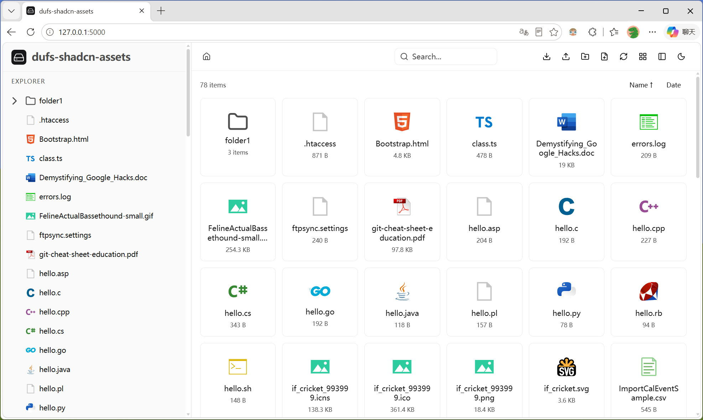
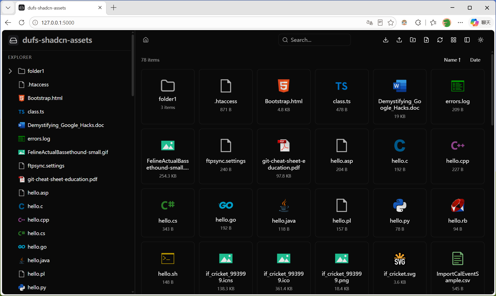
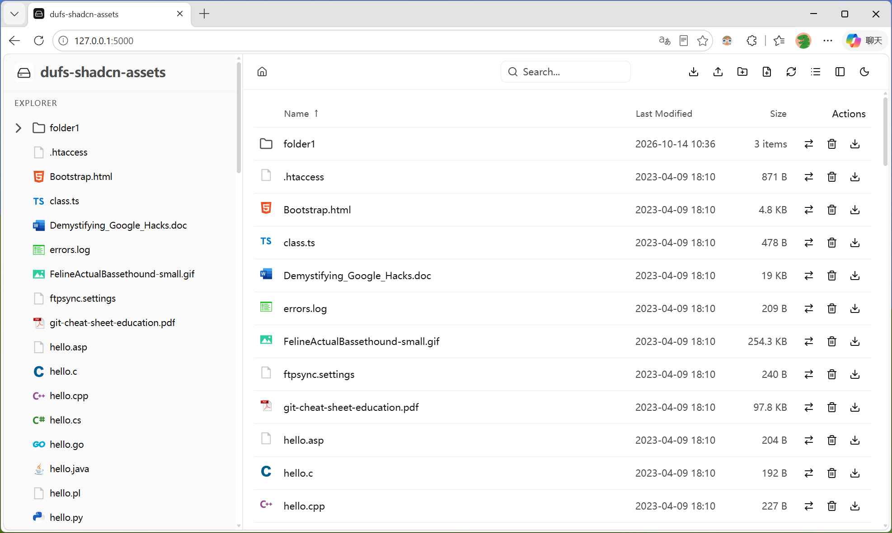
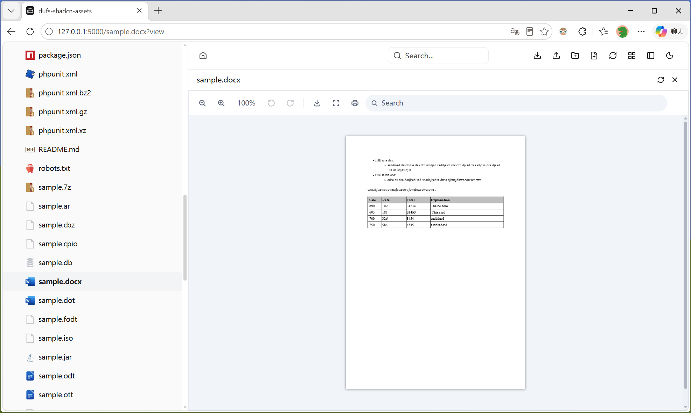
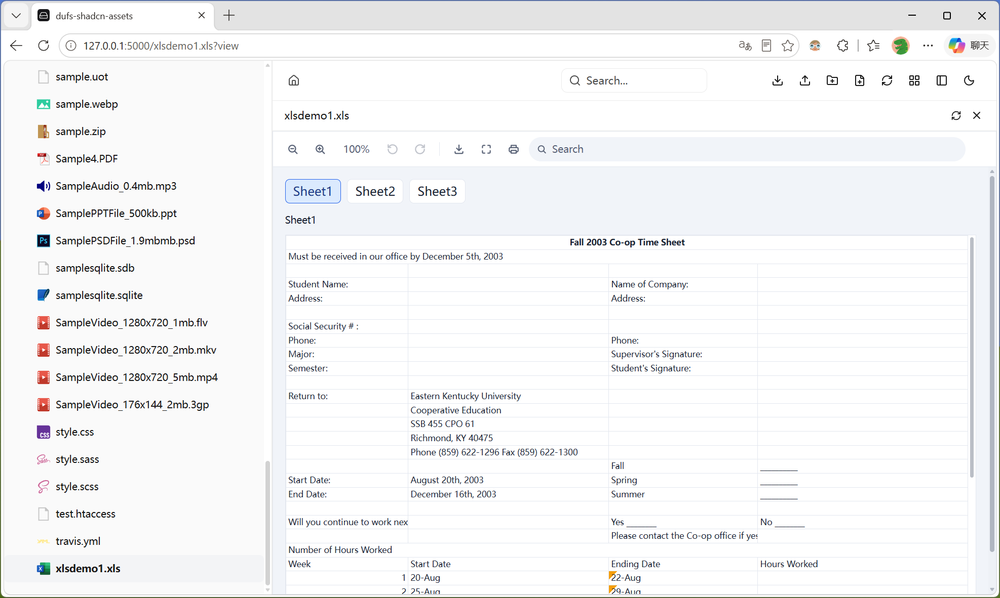
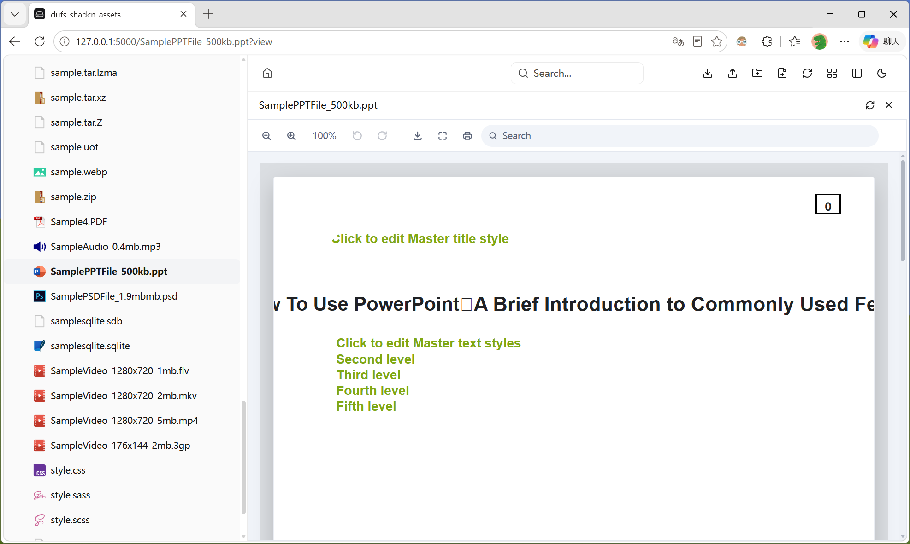
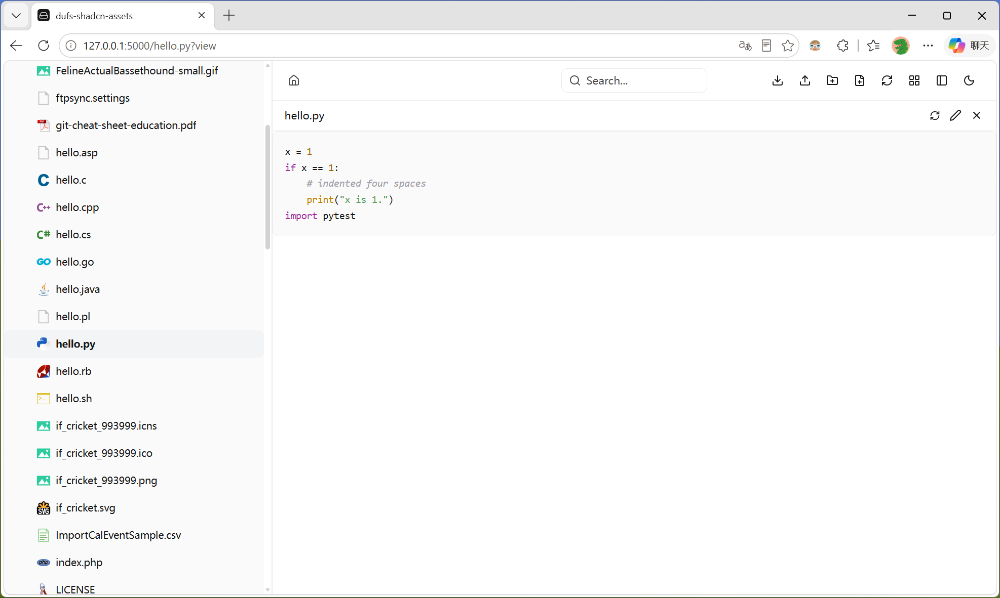
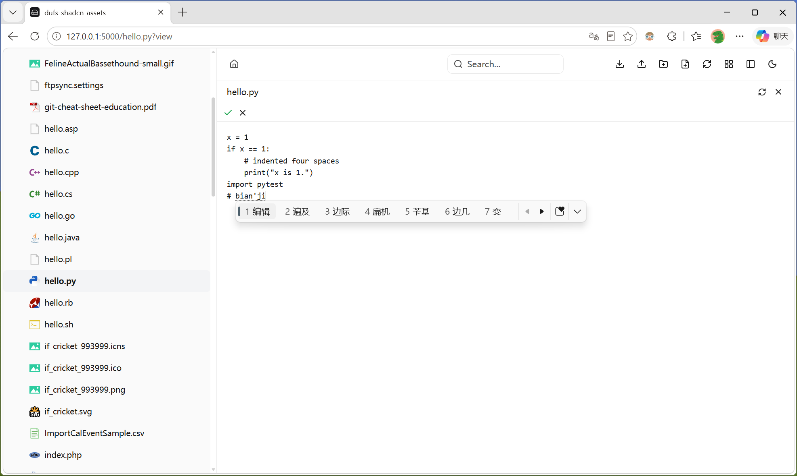
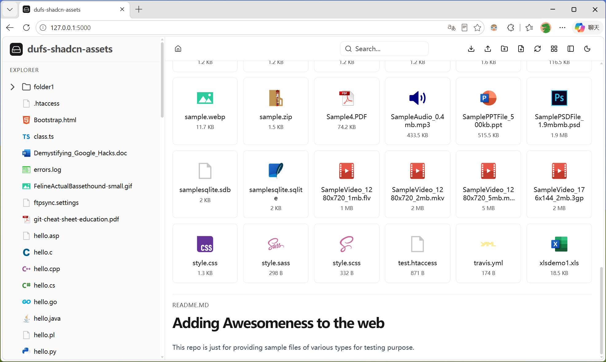

基于 shadcn/ui 打造的 dufs 前端主题 — 1132 个 VS Code 图标、30+ 格式预览、双视图模式、完全离线可用，构建产物仅为单个 HTML 文件。 A shadcn/ui-powered frontend theme for dufs — 1,132 VS Code icons, 30+ format previews, dual view modes, fully offline capable, all in a single HTML file.
一个主题，覆盖文件管理的所有需求One theme, all your file management needs
从本地 VS Code 扩展实时解析 1,132 个图标。自动匹配 599 扩展名、1,923 文件名、524 文件夹名，支持多级回退策略。1,132 icons parsed from VS Code extension. Matches 599 extensions, 1,923 filenames, 524 folder names with multi-tier fallback.
图标网格和表格列表一键切换，通过 config.json 的 view_mode 字段配置默认模式，用户偏好即时生效。Toggle between icon grid and table list. Configure default via config.json — take effect instantly.
基于 Open File Viewer 支持 30+ 格式：Office (.docx/.pptx/.xlsx)、PDF、图片、视频、音频、3D 模型、CAD、GIS、压缩包、电子书、邮件、XMind 等。30+ formats via Open File Viewer: Office, PDF, images, video, audio, 3D models, CAD, GIS, archives, ebooks, email, XMind and more.
虚拟滚动 + 懒加载，大数据量目录流畅渲染。主面板导航时自动展开并选中对应节点，支持浏览器前进后退。Virtual scrolling + lazy load. Auto-expands and highlights nodes on navigation. Full browser history support.
队列串行上传、断点续传 (PATCH + Range)、文件夹递归拖拽 (webkitGetAsEntry)、离开保护 (beforeunload)、上传前认证预检。Serial queue, resume (PATCH+Range), folder drag-drop (webkitGetAsEntry), beforeunload protection, auth pre-check.
highlight.js 30+ 语言语法高亮，UTF-8/GBK 智能编码检测。在线编辑支持 Ctrl+S 保存、Esc 取消。README.md 自动渲染。30+ language syntax highlighting, UTF-8/GBK detection. Inline edit with Ctrl+S save, Esc cancel. Auto-render README.md.
Vercel Geist 设计风格，shadow-as-border 技巧。深浅色一键切换，跟随系统偏好自动检测。Sidebar 独立配色，6px 主题色滚动条。Vercel Geist inspired, shadow-as-border technique. Manual/auto theme toggle. Independent sidebar colors, 6px themed scrollbar.
HTTP Basic Auth 完整支持。Login/Logout 按钮，CHECKAUTH 方法触发认证。下载 token 自动生成，上传前认证预检。Full HTTP Basic Auth. Login/Logout buttons, CHECKAUTH flow. Auto token generation for downloads, pre-upload auth check.
vite-plugin-singlefile 单文件构建。所有 JS/CSS/Font/Icon 内联，PDF.js cmaps/standard_fonts 本地化，Leaflet CSS 本地导入，零外部请求。Single-file build with vite-plugin-singlefile. All inline, no CDN. Local PDF.js cmaps, local Leaflet CSS. Zero external requests.
图标视图 & 列表视图 & 深色模式Icon View & List View & Dark Mode



Word · Excel · PowerPoint 文档在线预览，基于 Open File ViewerWord · Excel · PowerPoint preview powered by Open File Viewer



语法高亮、在线编辑、Markdown 自动渲染Syntax highlighting, inline editing, automatic Markdown rendering



企业级上传机制，稳定可靠Enterprise-grade upload mechanism, stable and reliable
下载 → 解压 → 启动，三步搞定Download → Extract → Start, three steps
通过 config.json 定制品牌和默认行为Customize branding and defaults via config.json
| 字段Field | 类型Type | 默认值Default | 说明Description |
|---|---|---|---|
logo_text | string | 侧边栏标题 / 浏览器标签页标题Sidebar title / Browser tab title | |
logo | string | 浅色模式 Logo 路径Light mode logo path | |
dark_logo | string | 深色模式 Logo 路径Dark mode logo path | |
logo_size | string | 28px | Logo 图片尺寸Logo image size |
logo_text_font_size | string | 20px | 标题文字大小Title font size |
view_mode | string | icons | 默认视图模式 (icons / list)Default view mode (icons / list) |
theme | string | light | 默认主题 (light / dark)Default theme (light / dark) |